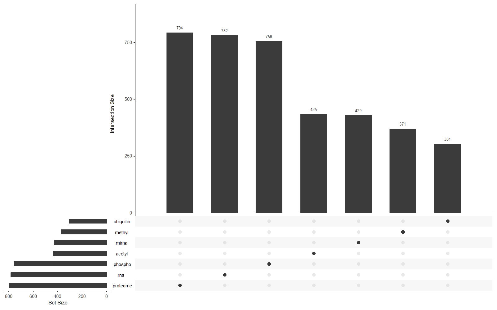
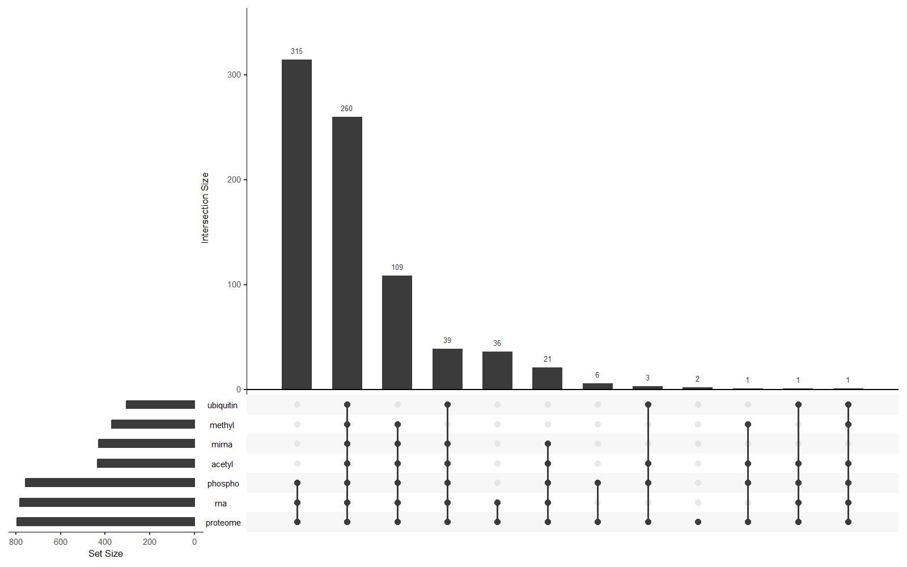
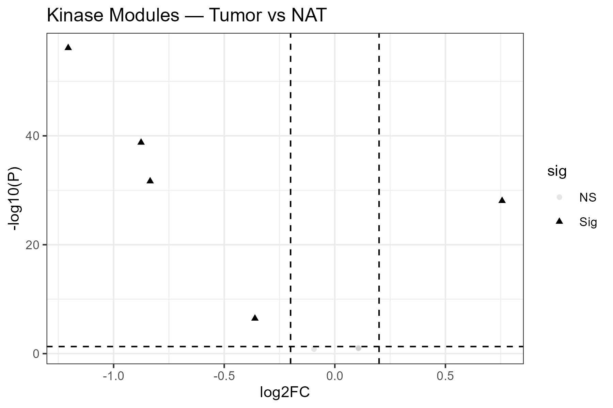
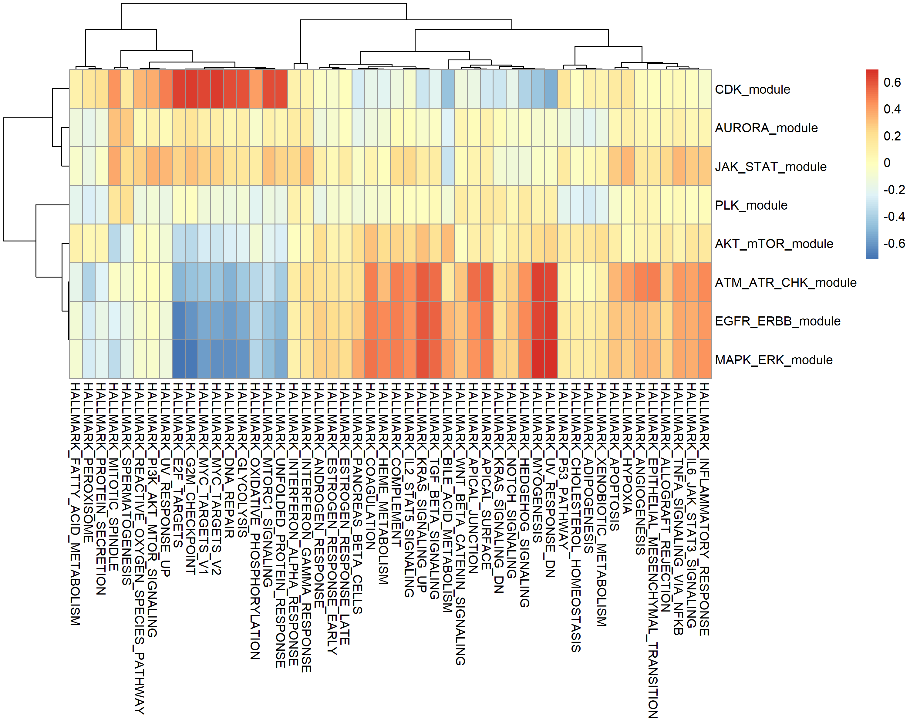

Graphical Abstract
This graphical abstract introduces the full scientific workflow in one panel, from cohort assembly through quality control, functional interpretation, latent-factor discovery, predictive multi-omics modeling, consensus biomarker identification, and final single-cell localization.

docs/assets/deck/graphical_abstract.pngIntegrated Multi-Omics Dissection of LUAD
This presentation reconstructs the entire project in a publication-style order. It starts with cohort composition and data integrity, moves through exploratory and functional analyses, then shows how MOFA and DIABLO identify complementary biological structure, and ends by demonstrating that the most robust signal is a vascular-endothelial microenvironment program that can be localized by single-cell RNA-seq.
Scientific Question
Can integrated bulk multi-omics reveal robust latent biological programs in LUAD, and can those programs be confirmed by consensus modeling and localized to specific cellular niches using single-cell transcriptomics?
Core Conclusion
The strongest reproducible program in the current workspace is a vascular-endothelial microenvironment axis that is visible in bulk multi-omics, survives consensus filtering across MOFA and DIABLO, and maps to vascular-like cell states in scRNA-seq.
Cohort Assembly and Data Structure
Data Layers Used in the Project
The project includes both bulk molecular layers and matched clinical annotations. This is important because the workflow is not only computationally integrative, but also clinically interpretable and biologically localizable.
Executive Cohort Dimensions
| Layer | Features | Samples | Tumor | NAT |
|---|---|---|---|---|
| RNA-seq | 16069 | 782 | 402 | 380 |
| Proteome | 11777 | 794 | 406 | 388 |
| Phosphoproteome | 6856 | 756 | 387 | 369 |
| Acetylome | 2566 | 435 | 222 | 213 |
| miRNA | 1611 | 429 | 221 | 208 |
| Methylation | 13517 | 371 | 186 | 185 |
All-6 matched samples: 369 total, including 186 tumor and 183 NAT samples. This balanced matched cohort becomes the critical backbone for multi-layer integration.
Why this matters
The first scientific point of the story is not the method; it is the structure of the cohort. The project combines deep molecular breadth with uneven layer coverage, so downstream modeling must explicitly respect overlap, missingness, and matched-sample logic. This is why the presentation begins with EDA rather than jumping directly into MOFA or DIABLO.
Cohort Overlap and Integrative Readiness


Interpretive takeaway
The overlap analysis justifies why the project must work with a matched all-6 cohort for the most stringent integration steps. It also explains why RNA-seq and proteome repeatedly emerge as major anchors in the later results: they simply sit at the center of the overlap structure.
EDA: Value Distributions Across Omics Layers
These density plots address a basic but essential question: do the layers look stable enough to compare? In a multi-omics project, distributional instability can dominate latent factor models and supervised classifiers if it is not recognized early.
EDA: Missingness Across Omics Layers
Missingness is not a side note in multi-omics studies; it is part of the data-generating process. These plots show where the project is robust and where interpretation must remain cautious.
EDA: PCA Structure Across Omics Layers
Principal component analysis offers an early view of cohort structure before any integrative method is applied. The goal is not only to look for tumor-versus-NAT separation, but also to detect heterogeneity, hidden structure, and possible outlier behavior.
Clinical Metadata: Core Cohort Composition
These primary clinical composition plots frame the biological context of the study. They do not claim mechanism by themselves, but they determine how confidently later molecular results can be interpreted in relation to tissue state, disease burden, genotype, and tumor phenotype.
Clinical Metadata: Molecular and Outcome Context
The following metadata plots provide deeper clinical and biological context, including subtype labels, immune classification, mutational burden, and survival-related structure. They become important later when MOFA factors and DIABLO components are interpreted against phenotype.
Clinical Metadata: Supplementary Cohort Architecture
These supplementary barplots help document the full cohort landscape. They are especially useful in a thesis setting because they show that the cohort has been described transparently rather than selectively.
PTM and Kinase Module Analysis
Why this analysis is here
PTM-focused analysis bridges raw molecular abundance and interpretable signaling behavior. Rather than asking only which molecules differ, it asks which functional pathways are rewired between tumor and NAT states. This creates a mechanistic backdrop for the latent and predictive models that follow.
Core biological theme
The PTM layer points toward cell-cycle activity, receptor tyrosine kinase signaling, MAPK biology, and checkpoint-related stress programs. This is important because it tells us that the project contains clear functional tumor biology even before integrative factor modeling begins.


Interpretive takeaway
This section is important in the overall story because it demonstrates that the dataset contains organized functional biology before any unsupervised or supervised integration method is used. It increases confidence that later latent factors and signatures are capturing genuine disease programs rather than arbitrary technical structure.
MOFA: Global Latent Structure Across Omics Layers
What MOFA contributes
MOFA decomposes multi-omics variation into latent factors that can capture shared structure across layers as well as view-specific signal. In this project, MOFA functions as a discovery engine: it identifies the dominant biological axes without forcing them to match a predefined label.
What to look for
- Which views explain the most useful variation?
- Does any factor cleanly separate tumor from NAT?
- Do any factors align with EGFR status, subtype, immune labels, or clinical phenotype?
MOFA: Clinical and Biological Interpretation of Factors
The next figures move from raw factor behavior to biological interpretation. They show that the latent structure is not abstract mathematics; it is readable in terms of tissue state, genotype, phenotype, and biologically coherent feature loading patterns.
MOFA: Factor 3 Clinical Context and Tumor Biology
Factor 3 becomes important because it is more phenotype-linked than Factor 1. It connects the integrative model to EGFR status, subtype structure, stage-related context, immune phenotype, and performance-status differences.
DIABLO: Cross-Omics Discriminative Signature
Why DIABLO follows MOFA
After MOFA identifies latent biological structure, DIABLO asks a different question: which coordinated cross-omics features best define a discriminative, predictive signature? In other words, MOFA is discovery-oriented, while DIABLO is signature-oriented.
Feature selection scale
| Block | Final selected features |
|---|---|
| RNA | 51 |
| miRNA | 31 |
| Methylation | 51 |
| Protein | 21 |
| Phospho | 11 |
| Acetyl | 11 |
DIABLO: Latent Space, Sample Separation, and Variable Geometry
These figures show how DIABLO organizes samples and variables in the supervised latent space. They are the most direct visual counterpart to the MOFA factor plots.
DIABLO: Loadings and Clustered Feature Patterns
Loadings and clustered image maps are crucial because they reveal what the model is actually using. They show whether predictive power is coming from coherent molecular blocks or from unstable isolated features.
DIABLO: Network-Level Cross-Block Organization
The next figures visualize the relationships among selected features across omics layers. This is where DIABLO moves beyond classification and begins to look like a cross-omics systems biology model.
DIABLO: ROC and AUROC Evaluation
These ROC-oriented figures summarize predictive performance across components and blocks. They are the most practical evidence that the selected signatures retain discriminative value when translated into classification metrics.
MOFA and DIABLO Intersection and Biological Consolidation
Consensus logic
A biomarker program that appears in both an unsupervised latent-factor model and a supervised discriminative model is more robust than a signal that appears in only one analytical framework. In the current project, the strongest overlap emerges for Factor 1, while Factor 3 does not produce a stable RNA overlap.
Key empirical observation
- MOFA Factor 1 maps to DIABLO component 1.
- MOFA Factor 3 maps to DIABLO component 2.
- Factor 1 RNA overlap yields 50 intersect genes.
- Factor 3 RNA overlap yields 0 intersect genes.
Single-Cell RNA-Seq Localization of the Final Program
Why single-cell is the final step
Bulk multi-omics can identify robust programs, but it cannot tell us which cell populations carry them. Single-cell RNA-seq provides the missing localization layer, allowing the final signature to be assigned to specific cellular niches in the tumor microenvironment.
Key biological question
Is the final signature tumor-intrinsic, or is it primarily a microenvironmental program? The scRNA figures strongly support the latter interpretation, especially in endothelial and vascular-associated states.
Integrated Scientific Summary
Logical story of the project
- The cohort was first stabilized by overlap-aware quality control and exploratory analysis.
- PTM-level analysis showed that the dataset contains meaningful pathway rewiring rather than isolated molecular noise.
- MOFA recovered a dominant tissue-state factor with a strong vascular-endothelial signature and a secondary phenotype-linked factor associated with EGFR and subtype.
- DIABLO converted the multi-omics structure into a discriminative cross-omics signature with strong predictive components.
- Consensus modeling showed that the most robust shared biomarker program is the Factor 1 vascular-endothelial axis.
- Single-cell RNA-seq localized that program to endothelial and vascular-like stromal populations.
Best final conclusion for a thesis or paper
The current workspace supports a strong integrative conclusion: LUAD contains a robust vascular-endothelial microenvironment program that is visible across bulk multi-omics layers, retained under consensus modeling, and localized to specific cellular compartments by single-cell transcriptomics.
Important caution
The most reproducible evidence in the present files supports the Factor 1 vascular program. Factor 3 remains biologically interesting and clinically linked, but it is not supported by the same degree of MOFA-DIABLO consensus overlap.
docs/MODA_Results.html